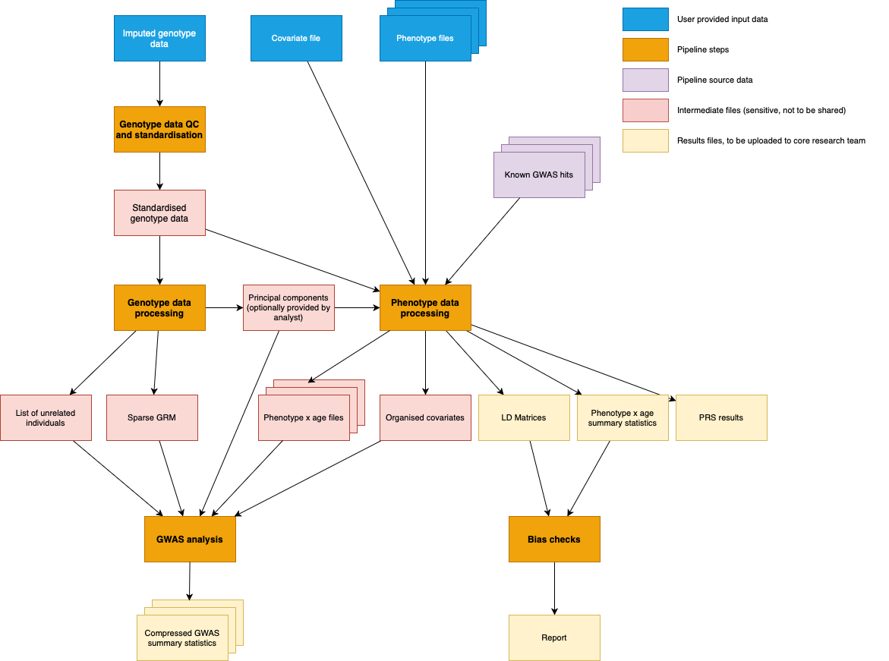

Projects
Lifecourse GWAS meta-analysis
We are collecting data on a comprehensive list of phenotypes every year up until 18 years of age and every five years after 18 years of age.
We have prepared a pipeline to minimise time and energy required by analysts to contribute data to the overall effort, ensure harmonisation across cohorts, and minimise errors. The use of standardised procedures across all samples is critical in order to increase the effectiveness of the subsequent meta-analyses that will be run internally upon receipt of these GWAS.
Background
Acute, chronic, and recurring adverse health conditions that emerge in later life are often shaped by processes experienced throughout life. Gaining a better understanding of how exposures at different stages in the lifecourse influence health outcomes is key to elucidating the potential benefits of specific disease prevention and treatment strategies.
Mendelian randomisation (MR) is a technique that exploits the random assortment of genetic variants inherited from parents to offspring, independent of other traits. This reduces susceptibility to confounding factors, including confounding by undiagnosed existing disease (reverse causation). MR is increasingly being used to estimate causal effects of modifiable risk factors across the lifecourse on later life outcomes. To robustly run MR, valid instrumental variables must be employed which require large-scale datasets comprising phenotype and genotype data. Consequently, analyses are currently confined to the examination of a narrow selection of phenotypes at a few specific time periods due to data restrictions regarding the measurement of multiple phenotypes at specific time periods in most cohort studies.
Aim
This consortium sets out to expand potential in this area, by aggregating these data from a wide range of cohorts. This will enable us to develop a more comprehensive set of instruments for future MR analyses to be able to estimate the effects of a range of phenotypes at multiple time periods across the lifecourse on later life outcomes.
In order to explore how selected phenotypes at different stages in the lifecourse modify risk, we seek to combine the results of multiple genome-wide association studies of these phenotypes in meta-analyses. This will increase the probability of detection of genetic variants associated with individual differences to generate valid instrumental variables for use in MR analyses.
| Phenotypes |
|---|
| Body mass index |
| Height |
| Waist circumference |
| Waist to hip ratio |
| Heel bone mineral density |
| Forced expiratory volume in 1 second |
| FEV1/FVC ratio |
| Systolic blood pressure |
| LDL cholesterol |
| HDL cholesterol |
| Triglycerides |
| C-reactive protein |
| Interleukin 6 |
| Leptin |
| Glycated haemoglobin |
| Insulin |
| Adiponectin |
| Calcium |
| Vitamin D |
| Estradiol |
| Testosterone |
| Sex hormone binding globulin |
Analysis plan
We have an analysis pipeline that will implement the first part of this analysis plan, generating summary statistics from each participating cohort

Project proposals
Our aim is to build an infrastructure of research activities around lifecourse genetic epidemiology, and we strongly encourage consortium members to propose, establish and lead additional projects. These projects can be, for example, new analytical approaches on the data already being generated, or the proposal of additional phenotypic areas for analysis.
New or existing members wishing to propose a new project should do so by completing the project proposal form (TBC) and submitting the proposal to the core research group. Proposals will undergo a basic evaluation by the executive committee and core research group for practical feasibility and scientific relevance. All accepted project proposals will be published here for transparency. For all approved project proposals, the project lead will be responsible for establishing a dedicated working group and for executing the study, with subsequent papers appropriately attributing the Lifecourse GWAS consortium.